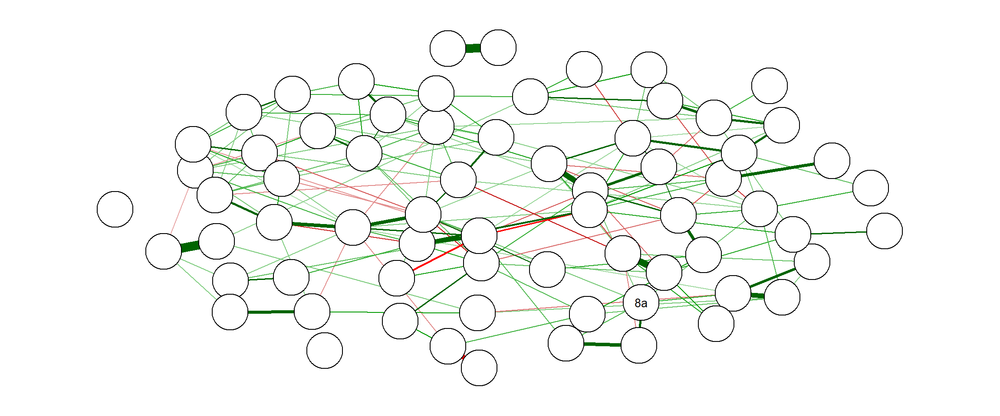

Capítulo 5 Hipóteses
5.1 “Existe mais foco em rapidez por parte da Liderança versus foco em qualidade por parte dos liderados?”
Hipótese Líderes e liderados não diferem na percepção de que rapidez vem antes de qualidade.
5.1.1 Estatísticas Descritivas

| x1_eu_sou | N | Média | Desv.Pad. | Mínimo | 1º Quartil | Mediana | 3º Quartil | Máximo |
|---|---|---|---|---|---|---|---|---|
| Colaborador | 445 | 1.0 | 0.5 | -0.5 | 0.7 | 1.0 | 1.3 | 2.9 |
| Líder de equipe | 52 | 2.1 | 0.5 | 0.9 | 1.8 | 2.2 | 2.5 | 2.9 |
| Líder de líder | 25 | 2.9 | 0.3 | 2.2 | 2.7 | 3.0 | 3.2 | 3.5 |
5.1.2 Testes de Hipótese
|
escore rapidez vs qualidade |
|||
|---|---|---|---|
| Predictors | Estimates | CI | p |
| (Intercept) | 1.00 | 0.95 – 1.05 | <0.001 |
| x1_eu_souLíder de equipe | 1.12 | 0.97 – 1.26 | <0.001 |
| x1_eu_souLíder de líder | 1.92 | 1.71 – 2.12 | <0.001 |
| Observations | 522 | ||
| Nagelkerke’s R2 | 0.569 | ||
Conclusão: Há fortes evidências para rejeitar a hipótese de que líderes e liderados percebam que a Inmetrics coloca Rapidez antes de Qualidade. Líderes de líderes tendem por achar que rapidez vem antes enquantto que liderados tentem a perceber que qualidade é que vem.
5.2 Os colaboradores têm pouco foco em resultados financeiros?
Eu pretendia gerar o construto “Foco em resultados financeiros” com as questoes 9, 10d, 10g, 13b, 19c, 19g;
O que falta é definir o que é “pouco” neste caso. Teríamos que ter um valor de referência, de outra pesquisa ou outro critério. Alguma ideia? Talvez seja melhor estudarmos diretamente o número de respostas “concordo em partes” + “concordo totalmente” de todas as questões, sem montar o construto.
5.3 Existe necessidade de uma Cultura de Gente?
Não enxerguei como os dados responderiam essa questão. Poderiam desenvolver mais?
5.4 A falta de sistemas formais de preparacão e acompanhamento impacta desempenho?
Quais questões indicariam presença/falta de sistemas formais de preparacão e acompanhamento? O que define desempenho?
##A Liderança e os sistemas da InMetrics são gargalos para a Cultura de Desempenho?
Aqui mais uma vez é melhor avaliarmos as questões de “Despreparo da Liderança” (8, 9, 10b, 10c, 10d, 10f, 10g, 13d, 16f, 19a, 19b, 19e, 19f) olhando as quantidades de “concordo”’s diretamente.
Eu digo isso porque não sei definir o que é gargalo. No extremo, Se todos responderem negativamente poderíamos concluir que é gargalo. Mas o meio termo será necessário definir.
5.5 Existe alto foco em qualidade do serviço prestado ao cliente?
Qual construto seria o mais adequado para aferir “foco em qualidade do serviço prestado ao cliente”? (quais questoes?)
5.6 Foco no Cliente é um potencial facilitador da Cultura de Inovação?
Não enxerguei como os dados ajudariam a responder essa questão. Primeiramente pensei em avaliar a associação entre os cosntruto Inovação e Foco no resultado.
5.7 Existe uma Cultura de Apoio entre os liderados que inexiste entre a Liderança
Cruzar construto Colaboração com o atributo colaborador/lider.
5.8 Aprendizagem é um valor?
Para essa pergunta nós temos a questão
“16. A Inmetrics é uma empresa que: [Oferece oportunidades de aprendizado e desenvolvimento]”
Porém, ela nos dirá se oferece ou não, mas nada dirá a opinião dos funcionários quanto ao valor que isso tempo. (eles podem achar que não é um valor, mesmo concordando totalmente que a Inmetrics offerece oportunidades de aprendizado).
5.9 Existem culturas distintas de Liderados X Líderes
Conseguimos comparar coisas entre Liderados X Líderes. Poderíamos definir essas culturas de maneira a permitir uma comparação quantitativa interessante do ponto de vista interpretativo.
Por exemplo: cruzar construto Inovação com colaborador/lider.
5.10 Existem outros valores que aparecem nos dados?
Um desafio para mim, conforme conversamos no call de hoje.
5.11 A liderança sênior é distante da base?
Avaliar as questões de Liderança Sênior diretamente (sem fazer construtos).
Liderança Sênior
(Culturas de Gente e Desempenho)
18c
20 todas5.12 Imediatismo é equacionado a rapidez?
Aqui irei avaliar as associações entre as questões (9, 10a, 14) vs (15a, 15b).
5.13 Imediatismo impacta qualidade?
Na primeira impressão minha, os dados não são capazes de responder a essa questão. Vamos discutir.
5.14 Os colaboradores se sentem abandonados (sem respaldo da liderança, sem preparo, sem reconhecimento)?
Avaliar as questões direttamente do construto Proximidade da Liderança.
Proximidade da Liderança
(Cultura de Gente)
10b
10c
10d
10e
10f
18b
19h5.15 Quais as principais dores dos colaboradores?
Minha sugestão de abordagem: construir os differentes construtos e depois avaliar quais deles apresentaram as declarações mais negativas. (comparação entre construtos)
5.16 O que os colaboradores mais apreciam na empresa?
Acho que aqui seria a mesma coisa que a anterior, porém olhando a outra ponta.
5.17 A ênfase em rapidez impacta o foco no cliente?
Mais uma vez não sei se conseguimos responder isso.
5.18 Inovação está associada a necessidades de clientes?
Não sei se conseguimos responder isso.